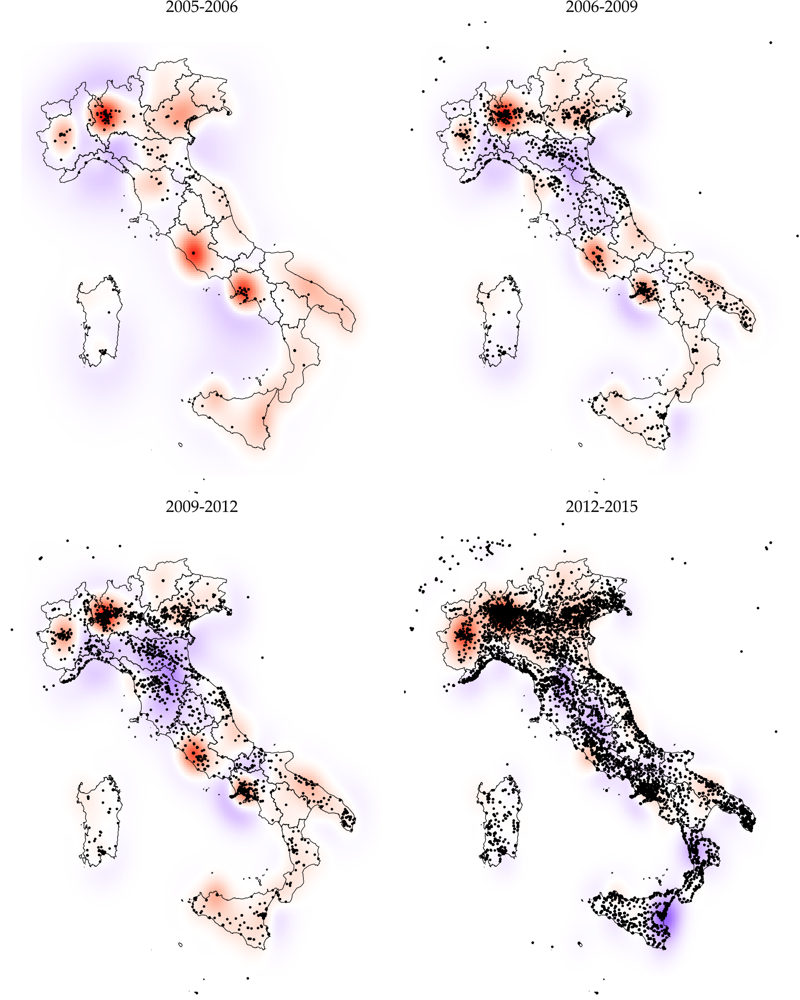
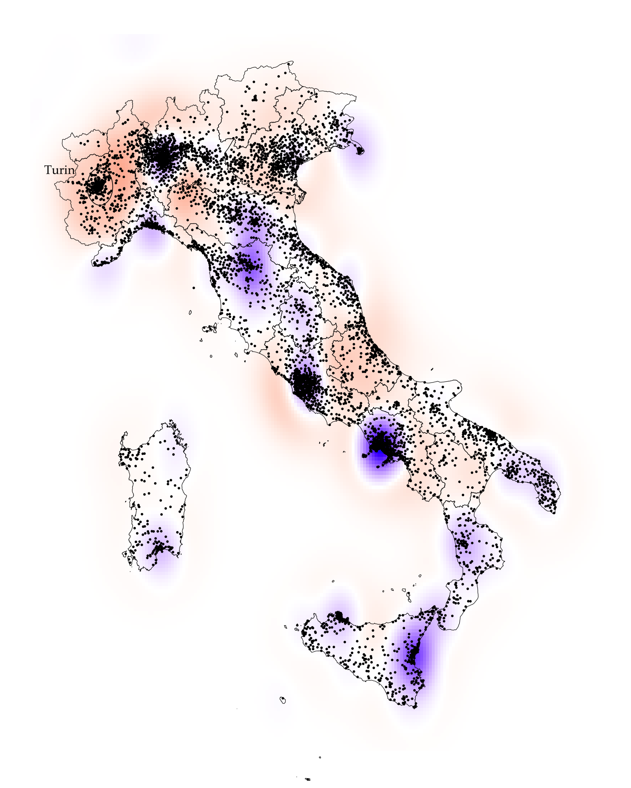
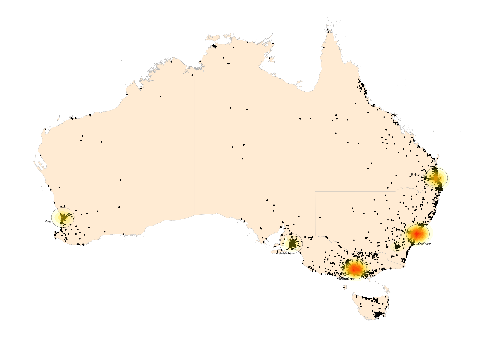
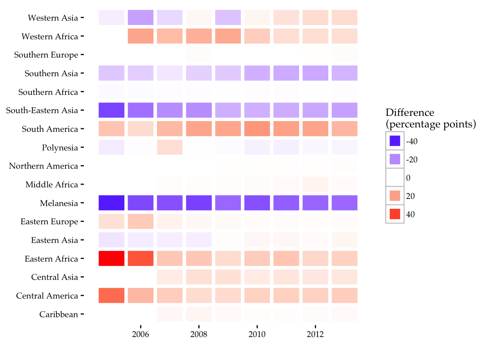

Software Python, R, QGIS
Source meetup.com/meetup_api, istat.it, elezioni.interno.it/opendata.html
API Parsing script github.com/fraba/meetup_api_python
File format JSON, CSV
Meetup user records 97,808
Municipalities records 8072
Voting records 90,096 (Number of votes by municipality and party)
Geolocated people for density analysis 59,394,207
Geolocated votes for density analysis 27,371,747
By comparing the data on the distribution of the resident population in Italy and the number of members added by the Five Star Movement to its meetups in four periods, we can visualise where and when membership grew faster than expected given the density of the resident population in that area. In the figures below, each dot represents a member who registered on Meetup.com in that period. The association between membership and the resident population is indicated in red if the number of members in that area is higher than expected, blue if lower than expected and white if as expected given the density of the population in the same area.

In the map below we compare the density of the membership of the Five Star Movement, with the density of the votes the movement received in the 2014 European Parliament election. This time each dot represents 1000 votes casted for the Five Star Movements. The number of members did not translate in a proportional number of votes in all the major cities (which of course attract the highest number of members) with the notable exception of Turin.

Software Python, SQLite, R, QGIS
Source build.kiva.org
File format JSON
Processing script github.com/fraba/Kiva-JSON-Snapshot-to-SQLite
Loan records 784,081
Location records 784,081
Lender records 961,970
Loan-lender relation records 17,014,065
Where are the Australian lenders?

Difference in percentage points between distribution of Australian private lending and Australia Official development assistance. In the table above the maximum value of each column is emphasised. In the heatmap below cold colors indicate negative values, warm colors positive values.
